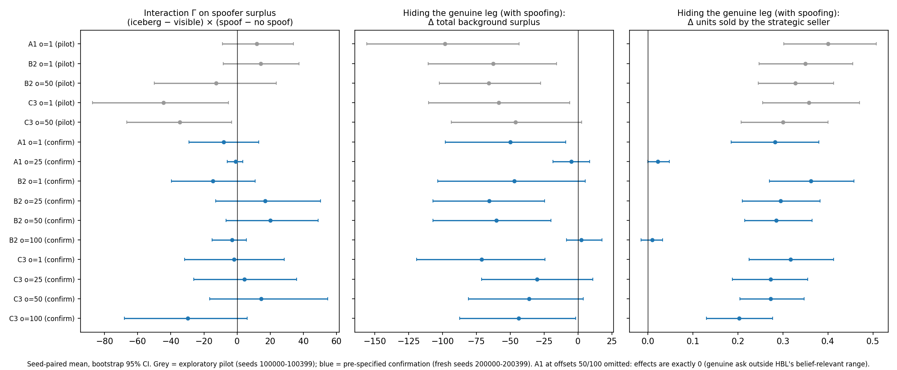

<title>Iceberg Spoofing Pilot</title>
<meta name="claude:viewport-fit-sides" content="cover">
<link rel="stylesheet" href="https://fonts.googleapis.com/css2?family=Newsreader:opsz,wght@6..72,500;6..72,600&family=Inter:wght@400;500;600&family=JetBrains+Mono:wght@400;500&display=swap">
<style>
/* Layout: single reading column (~70ch) with full-width tables in their own scroll boxes; findings as a numbered sequence because they are argued in order. */
:root {
  --bg: #f7f8f6;
  --surface: #ffffff;
  --fg: #1b1f1d;
  --muted: #5b6460;
  --rule: #d9dedb;
  --accent: #1f5f8b;
  --accent-soft: #e3edf4;
  --good: #2e6b3e;
  --warn: #8a5a12;
  --warn-soft: #f6ecd9;
  --plate: #ffffff;
  --display: "Newsreader", Georgia, "Times New Roman", serif;
  --body: "Inter", system-ui, -apple-system, "Segoe UI", sans-serif;
  --mono: "JetBrains Mono", ui-monospace, "Cascadia Mono", Consolas, monospace;
}
@media (prefers-color-scheme: dark) {
  :root:not([data-theme="light"]) {
    --bg: #121615; --surface: #191e1c; --fg: #e4e8e6; --muted: #9aa5a0; --rule: #2c3431;
    --accent: #7db3db; --accent-soft: #1c2a35; --good: #7fc28f; --warn: #e0b56a; --warn-soft: #2e2617;
    --plate: #f4f5f4; color-scheme: dark;
  }
}
:root[data-theme="dark"] {
  --bg: #121615; --surface: #191e1c; --fg: #e4e8e6; --muted: #9aa5a0; --rule: #2c3431;
  --accent: #7db3db; --accent-soft: #1c2a35; --good: #7fc28f; --warn: #e0b56a; --warn-soft: #2e2617;
  --plate: #f4f5f4; color-scheme: dark;
}
body { background: var(--bg); color: var(--fg); font: 15.5px/1.6 var(--body); }
.wrap { max-width: 46rem; margin: 0 auto; padding-block: 2.5rem 4rem;
  padding-left: max(16px, env(safe-area-inset-left, 0px)); padding-right: max(16px, env(safe-area-inset-right, 0px));
  display: flex; flex-direction: column; gap: 1.1rem; }
h1, h2, h3 { font-family: var(--display); font-weight: 600; text-wrap: balance; line-height: 1.2; margin: 0; }
h1 { font-size: 2.1rem; }
h2 { font-size: 1.45rem; margin-top: 1.6rem; padding-top: 1.1rem; border-top: 1px solid var(--rule); }
h3 { font-size: 1.12rem; margin-top: .6rem; }
p, ul, ol { margin: 0; }
ul, ol { padding-left: 1.25rem; display: grid; gap: .35rem; }
.meta { color: var(--muted); font-size: .88rem; }
.eyebrow { font: 500 .74rem var(--mono); letter-spacing: .08em; text-transform: uppercase; color: var(--accent); }
.bottom-line { background: var(--accent-soft); border: 1px solid var(--rule); border-radius: 6px; padding: 1rem 1.1rem; display: grid; gap: .55rem; }
.bottom-line strong { font-weight: 600; }
.caveat { background: var(--warn-soft); border-radius: 6px; padding: .8rem 1rem; font-size: .93rem; }
.caveat b { color: var(--warn); }
code, .num { font-family: var(--mono); font-size: .86em; }
.tbl { overflow-x: auto; border: 1px solid var(--rule); border-radius: 6px; background: var(--surface); }
table { border-collapse: collapse; width: 100%; font-size: .84rem; font-variant-numeric: tabular-nums; }
th, td { padding: .42rem .65rem; text-align: right; border-bottom: 1px solid var(--rule); white-space: nowrap; }
th:first-child, td:first-child { text-align: left; }
th { font-weight: 600; color: var(--muted); font-size: .76rem; letter-spacing: .02em; }
tr:last-child td { border-bottom: 0; }
td.sig { color: var(--good); font-weight: 500; }
td.zero { color: var(--muted); }
.cap { font-size: .82rem; color: var(--muted); }
figure { margin: 0; display: grid; gap: .5rem; }
.plate { background: var(--plate); border: 1px solid var(--rule); border-radius: 6px; padding: .5rem; overflow-x: auto; }
.plate img { display: block; width: 100%; min-width: 640px; height: auto; }
.status { display: inline-block; font: 500 .72rem var(--mono); padding: .08rem .45rem; border-radius: 99px; border: 1px solid currentColor; margin-left: .35rem; vertical-align: .12em; }
.status.ok { color: var(--good); }
.status.no { color: var(--warn); }
a { color: var(--accent); }
a:focus-visible { outline: 2px solid var(--accent); outline-offset: 2px; }
</style>

<main class="wrap">
  <div class="eyebrow">Research update · PyMarketSim · November 2026</div>
  <h1>Hiding the genuine leg: an iceberg × spoofing pilot</h1>
  <p class="meta">Extends Wang &amp; Wellman (2017; Games 2021) and Gu et al. (ICAIF 2024). 34,800 paired simulations; exploratory pilot plus a pre-specified confirmation on fresh seeds.</p>

  <section class="bottom-line">
    <div class="eyebrow">Bottom line</div>
    <p><strong>Question.</strong> Enforcement records show spoofers placing their genuine orders as icebergs (Debie et al. 2023; Verhulst &amp; Pennings 2025). Gu et al. (Sec. 8.1) show that a spoofer's own visible sell order enters HBL beliefs and pushes against its spoof. Does hiding the genuine leg make spoofing more profitable or more harmful?</p>
    <p><strong>Answer in this environment: no detectable interaction.</strong> Hiding and spoofing act roughly additively. An apparent substitution effect in the pilot did not replicate on fresh seeds.</p>
    <p><strong>What did replicate:</strong> (1) Gu et al.'s liquidity gradient for spoofing; (2) a sharp threshold, where displayed size matters only when the genuine ask sits inside the range where HBL beliefs are non-zero; (3) hiding the genuine leg shifts fills from HBL sellers to the hidden seller and lowers background surplus, with or without spoofing.</p>
  </section>

  <h2>Setup</h2>
  <p>The environment follows Gu et al. (2024, Sec. 4): T = 10,000; 12 ZI and 12 HBL traders (L = 4, λ = 0.002, shading [250, 500], σ²<sub>PV</sub> = 5×10⁶, q<sub>max</sub> = 10); fundamental mean 10⁵, κ = 0.05, shock variance 10⁴; one ladder market maker (K = 8, λ = 0.035). Liquidity uses Gu's settings A1 (ξ = 10, ω = 16, most liquid), B2 (50, 64) and C3 (100, 256, least liquid).</p>
  <p>The strategic seller arrives at λ = 0.02 from t = 1000. At each arrival it withdraws its orders, posts a genuine sell of G = 10 units at r̃<sub>t</sub> + offset, and in spoofing arms adds a 200-unit bid one tick behind the best bid.</p>
  <div class="tbl"><table>
    <thead><tr><th>Arm</th><th>Spoof bid</th><th>Genuine leg (10 units)</th></tr></thead>
    <tbody>
      <tr><td>nsV / spV</td><td>no / yes</td><td>fully displayed</td></tr>
      <tr><td>nsI / spI</td><td>no / yes</td><td>iceberg, peak 1, refilled at the back of the queue</td></tr>
    </tbody>
  </table></div>
  <p>All arms share seeds: fundamental path, arrivals, private values, traders' random draws and within-step order. The interaction is computed seed by seed as <span class="num">Γ = (spI − nsI) − (spV − nsV)</span>. Intervals are seed-level bootstrap 95% CIs.</p>

  <h3>Changes to the simulator, and checks</h3>
  <ul>
    <li><strong>Order book rebuilt.</strong> It uses price-time priority, trades at each resting order's price level by level, and does not let a trader match its own orders. Upstream breaks same-price ties by order id, clears a whole step at one price, and rewrites historical orders on partial fills. An iceberg study cannot tolerate those three behaviours.</li>
    <li><strong>HBL reads a public ledger.</strong> Each record holds the submitted price, displayed size, time, fills and cancel time. Hidden size and owner identity are never used. The pricing step is upstream <code>HBLAgent.determine_optimal_price</code>, unchanged.</li>
    <li><strong>Tests</strong> (6, all pass):
      <ul>
        <li>On unit-order histories, the ledger belief equals upstream's belief exactly.</li>
        <li>With no HBL traders, the visible and iceberg arms produce identical markets.</li>
        <li>A seller that nobody can see or trade with leaves the market unchanged, so the arms are paired.</li>
        <li>Cash and positions are conserved, and the visible part of an iceberg never exceeds its peak.</li>
        <li>FIFO priority and level-by-level pricing behave as specified.</li>
      </ul>
    </li>
  </ul>

  <h2>Findings</h2>

  <h3>1. Spoofing reproduces Gu et al.'s liquidity gradient <span class="status ok">replicated</span></h3>
  <p>The table shows the effect of adding the spoof bid while the genuine leg is visible (spV − nsV), confirmation seeds, 400 per cell. The price push grows as liquidity falls and as the genuine ask moves up. HBL traders lose in almost every cell. The spoof bid is also hit about 0.2–0.4 units per market, because between arrivals it can become the best bid. That execution cost already exists in Gu's arrival-based spoofer.</p>
  <div class="tbl"><table>
    <thead><tr><th>Offset · env</th><th>Δ midprice − r̃</th><th>Δ HBL surplus / agent</th><th>Δ spoofer surplus</th><th>spoof units hit</th></tr></thead>
    <tbody>
      <tr><td>r̃+1 · A1</td><td class="sig">−0.3 [−0.5, −0.1]</td><td class="sig">−5.8 [−10.4, −1.0]</td><td>−13.2 [−45.3, +17.7]</td><td>0.18</td></tr>
      <tr><td>r̃+1 · B2</td><td class="sig">+1.2 [+0.4, +2.0]</td><td class="sig">−9.3 [−15.4, −3.5]</td><td>+6.0 [−33.6, +43.2]</td><td>0.27</td></tr>
      <tr><td>r̃+1 · C3</td><td class="sig">+5.9 [+4.3, +7.8]</td><td class="sig">−7.3 [−13.4, −1.5]</td><td>+48.2 [−3.8, +97.3]</td><td>0.29</td></tr>
      <tr><td>r̃+50 · A1</td><td>−0.0 [−0.3, +0.2]</td><td class="sig">−11.7 [−18.3, −6.2]</td><td>+3.8 [−18.8, +28.6]</td><td>0.32</td></tr>
      <tr><td>r̃+50 · B2</td><td class="sig">+2.3 [+1.2, +3.4]</td><td class="sig">−12.1 [−18.1, −6.3]</td><td>+25.7 [−16.7, +66.1]</td><td>0.34</td></tr>
      <tr><td>r̃+50 · C3</td><td class="sig">+10.8 [+8.8, +12.8]</td><td>−6.5 [−14.8, +3.1]</td><td>+25.7 [−38.5, +80.7]</td><td>0.33</td></tr>
      <tr><td>r̃+100 · B2</td><td class="sig">+5.2 [+3.8, +6.6]</td><td class="sig">−12.7 [−19.9, −6.0]</td><td>+37.5 [−9.7, +84.5]</td><td>0.42</td></tr>
      <tr><td>r̃+100 · C3</td><td class="sig">+15.0 [+12.6, +17.5]</td><td>−9.8 [−18.7, +0.2]</td><td class="sig">+66.2 [+7.0, +122.2]</td><td>0.40</td></tr>
    </tbody>
  </table></div>
  <p class="cap">Green: 95% CI excludes zero. Surplus levels for reference: HBL ≈ 610–660 per agent; background total ≈ 13,800.</p>

  <h3>2. No interaction between hiding and spoofing <span class="status no">hypothesis not supported</span></h3>
  <p>In the exploratory pilot (offsets r̃+1 and r̃+50), the least liquid market C3 showed Γ on spoofer surplus of −44.5 [−87, −5] and −34.7 [−67, −3]. That pattern suggested hiding and spoofing were substitutes. I wrote this down as a pre-specified claim and reran everything on fresh seeds with two more offsets. It did not replicate: C3 gave Γ = −1.8 [−32, +29] at r̃+1 and +14.5 [−17, +55] at r̃+50, and no confirmation cell excludes zero. I treat the pilot result as a false positive from many comparisons.</p>
  <p>With 400 seeds per cell, a 95% interval for Γ on spoofer surplus is about ±30–45. Effects smaller than that cannot be ruled out. Spoofer surplus is noisy because the seller ends with a short position valued at the final fundamental.</p>

  <figure>
    <div class="plate"></div>
    <figcaption class="cap">Left: interaction Γ on spoofer surplus. Middle and right: effect of hiding the genuine leg when spoofing (spI − spV). Grey = exploratory pilot, blue = pre-specified confirmation. A1 at r̃+50 and r̃+100 is omitted because every effect there is exactly zero (finding 3).</figcaption>
  </figure>

  <h3>3. Displayed size matters only inside the belief-relevant range <span class="status ok">replicated</span></h3>
  <p>In A1 with the genuine ask at r̃+50 or r̃+100, the visible and iceberg arms are identical seed by seed: Γ and every display effect are exactly zero. The cause is how HBL beliefs are built. A rejected ask at price a only enters the belief for prices p ≥ a. Above the market maker's ladder there are no bids or sell trades at those prices, so the belief is already zero whatever the rejection weight.</p>
  <p>The effect switches off gradually: near zero for A1 at r̃+25 and B2 at r̃+100, fully on when the ask sits inside the spread. Any claim about displayed depth and HBL must therefore be conditioned on where the order rests relative to the trading range.</p>

  <h3>4. Hiding crowds out HBL sellers and lowers background surplus <span class="status ok">replicated</span></h3>
  <p>Without any spoofing (nsI − nsV, confirmation, units per market after t = 1000), hiding the genuine leg changes who sells:</p>
  <div class="tbl"><table>
    <thead><tr><th>Offset · env</th><th>units sold by hidden seller</th><th>bought by HBL</th><th>bought by ZI</th><th>units sold by HBL to others</th><th>Δ HBL surplus / agent</th><th>Δ background total</th></tr></thead>
    <tbody>
      <tr><td>r̃+1 · A1</td><td class="sig">+0.34</td><td class="sig">+0.23</td><td class="sig">+0.13</td><td class="sig">−0.34</td><td class="sig">−4.5</td><td class="sig">−53.9</td></tr>
      <tr><td>r̃+1 · B2</td><td class="sig">+0.38</td><td class="sig">+0.20</td><td class="sig">+0.19</td><td class="sig">−0.46</td><td class="sig">−5.8</td><td class="sig">−70.9</td></tr>
      <tr><td>r̃+1 · C3</td><td class="sig">+0.34</td><td class="sig">+0.17</td><td class="sig">+0.16</td><td class="sig">−0.32</td><td>−1.6</td><td>−23.1</td></tr>
      <tr><td>r̃+25 · B2</td><td class="sig">+0.35</td><td class="sig">+0.23</td><td class="sig">+0.12</td><td class="sig">−0.39</td><td class="sig">−4.7</td><td>−49.7</td></tr>
      <tr><td>r̃+25 · C3</td><td class="sig">+0.33</td><td class="sig">+0.18</td><td class="sig">+0.15</td><td class="sig">−0.33</td><td class="sig">−3.7</td><td class="sig">−57.5</td></tr>
      <tr><td>r̃+50 · B2</td><td class="sig">+0.31</td><td class="sig">+0.14</td><td class="sig">+0.17</td><td class="sig">−0.42</td><td>−2.2</td><td>−34.7</td></tr>
      <tr><td>r̃+50 · C3</td><td class="sig">+0.27</td><td class="sig">+0.12</td><td class="sig">+0.15</td><td class="sig">−0.38</td><td>−2.2</td><td>−52.3</td></tr>
      <tr><td>r̃+100 · C3</td><td class="sig">+0.18</td><td>+0.06</td><td class="sig">+0.12</td><td class="sig">−0.29</td><td class="sig">−6.3</td><td class="sig">−96.5</td></tr>
      <tr><td>r̃+50 · A1</td><td class="zero">0</td><td class="zero">0</td><td class="zero">0</td><td class="zero">0</td><td class="zero">0</td><td class="zero">0</td></tr>
    </tbody>
  </table></div>
  <p>With a visible 10-unit ask, HBL sellers sell more: about 0.3–0.45 more units per market. When the size is hidden, the hidden seller fills those trades instead. The hidden seller has no private value, while the displaced HBL sellers do, so gains from trade are lost and background surplus falls. This matches the liquidity-competition logic of Cebiroglu &amp; Horst (2015), where hiding reduces competitors' undercutting, here with learning traders. The seller's own surplus barely moves (significant only at C3, r̃+100: +34). In this setting, hiding moves volume more than it moves profit.</p>

  <div class="caveat"><b>Limits of this pilot.</b>
    <ul>
      <li><strong>Small effects.</strong> Background effects are about 0.3–0.7% of total surplus.</li>
      <li><strong>Thin markets.</strong> About 16–27 units trade per run, as in the Wang/Wellman and Gu settings.</li>
      <li><strong>Fixed strategies.</strong> Offsets, peak size and G = 10 are fixed. The seller does not best-respond, and background traders do not re-equilibrate.</li>
      <li><strong>Specific to HBL.</strong> Results rest on the Gjerstad–Dickhaut belief as implemented in PyMarketSim.</li>
      <li><strong>Many comparisons.</strong> Only the three pre-specified claims were tested confirmatorily.</li>
    </ul>
  </div>

  <h2>Questions for discussion</h2>
  <ol>
    <li><strong>Strategic version.</strong> Should the next step be EGTA over the seller's (offset, peak, spoof size), with HBL/ZI mixtures re-equilibrated? Fixed-strategy additivity may not survive best responses.</li>
    <li><strong>Lower-variance profit measure.</strong> Valuing each sold unit at r̃ when it trades should shrink the spoofer-surplus noise; how much is not yet measured.</li>
    <li><strong>Learners that infer hidden size.</strong> An HBL variant that reconstructs refills from public fills would test whether finding 4 survives traders who detect icebergs, as Frey &amp; Sandås and Zotikov &amp; Antonov report for real markets.</li>
    <li><strong>Market maker side.</strong> Does a ladder market maker absorb the crowding-out in finding 4, or bear it as inventory risk?</li>
  </ol>

  <h2>Reproducibility</h2>
  <p class="meta">Code: <code>experiments/a1sim.py</code> (simulator), <code>a1_pilot.py</code> (runner), <code>a1_analysis.py</code> (paired statistics), <code>test_a1sim.py</code> (checks), <code>A1_DESIGN.md</code> (design and pre-specified claims). Seeds: pilot 100000–100399 (A1/B2/C3 × 13 arms, 15,600 runs); confirmation 200000–200399 (A1/B2/C3 × offsets 1, 25, 50, 100 × 4 arms, 19,200 runs).</p>
</main>
